[toc]
Questions
cost-volume-based Multi-View Stereo
《Mvsnet: Depth inference for unstructured multi-view stereo》
multiplane images method(MPI)
《Stereo magnification: Learning view synthesis using multiplane images》
signed distance function (SDF)是什么？为什么和mesh，occupancy（是什么？）是并列？
LiDAR 信息是什么？有什么作用？
高精度的深度信息，是在场景中发射激光脉冲然后测量脉冲反射回来的时间，从而精确计算物体/表面的距离。
作用：直接获取深度信息，输出稀疏点云；用作几何先验；有效补充RGB相机弱点。
限制：高精度 LiDAR 价格昂贵；与 RGB 图像对齐需要准确的外参标定。
optical flow 能干什么？
Pixel Nerf / Pixel splat 的联系与区别？
如何理解前馈nerf避开特定场景优化？
一次训练多次推理，不同于传统NeRF的场景特化优化。
Intro
传统的 3DR 依赖于优化方案：比如 SfM，MVS，但是这些方法计算成本高，收敛慢，依赖于精准的数据集。所以 feed-forward 方法应运而生。早期的 feed-forward 有：cost-volume-based Multi-View Stereo、multiplane images (MPI) method等，展示出了基于学习的推理方法比逐场景优化方法的好处。Feed-forward 不需要逐场景的迭代优化，单次的前向传递就可以 infer，速度方面有数量级的提升，需要大量可学习先验+大规模训练。
按照三维结构建模与渲染方式进行分类，可对现有的 feed-forward 大致分为五类：
（1）NeRF-based，辐射场+体渲染；
（2）Pointmap-based，3R系列的点图方法；
（3）3DGS-based，GS+快速渲染；
（4）other 3D representations （mesh、occupancy、SDF）；
（5）3D-representation free，深度神经网络，无需显式三维表示。
优势：实时的场景理解与tracking，稀疏输入的高效重建；
挑战：多模态数据集有限，自由视点NVS泛化性差，上下文处理计算成本高。
Methods
1. NeRF
隐式场景表示 & 可微体渲染 & MLPs 。但是逐场景优化，限制了到未见场景的泛化性，所以 feed-forward 直接学习从 sparse view 推断 NeRF 表示，避开特定场景优化（如何理解？）。
PixelNeRF（下图所示） —— Feed-forward-NeRF 开山之作。提出条件 NeRF 框架，从输入提取像素对齐的特征，从不同场景进行特征提取与学习，并在 sparse view 下实现 NVS。由此衍生了不同特征表示的 feed-forward-NeRF 工作。
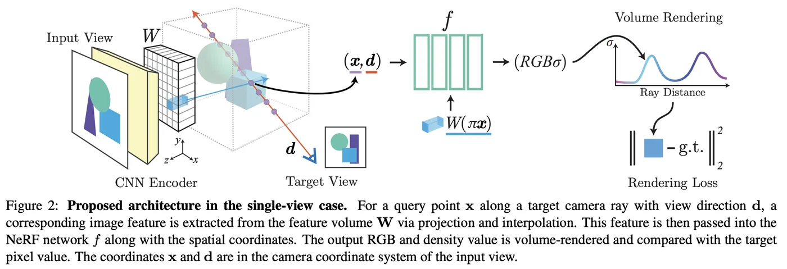
1.1 1D Feature-based
encode global 1D latent code , same latent code is shared between all 3D points
CodeNeRF: disentanglement strategy; 共同学习纹理和形状的 embeddings （How？），然后基于这些 MLP 预测颜色和体密度；
ShaRF: 引入 shape + appearance 特征，作为 NeRF 条件输入；
Shap-E: encode point clouds + RGBA images to latent vactors ；
1.2 2D Feature-based
利用图像编码器提取图像特征，然后输入 MLP 预测该点的体密度与颜色，通过体渲染得到 \(I_{render}\)，与 \(I_{GT}\) 比较反向优化图像编码器与渲染网络，实现3DR与NVS。
整体方法：从每个训练视角的每个像素发出一条射线，每条射线均匀采样 n 个点，总共采样出 c*h*w*n 个3d点。这些点都可以被投影到所有的源图像中，然后根据在源图像中的像素位置，直接采样或者进行双线性插值，就可以得到，这个3d点在这张源图像中的特征，将所有视图下这个3d点的特征融合就可以得到融合特征。然后再送到MLP进行后续预测关键参数。
GRF/IBRNet: 对每个目标视角射线上的三维采样点，投影至多个源图像中获取图像特征，再将这些多视角特征进行融合后输入 MLP 网络，预测每个采样点的体密度与方向相关颜色值，最后借助体积渲染公式合成目标图像像素，实现端到端训练与新视角合成。
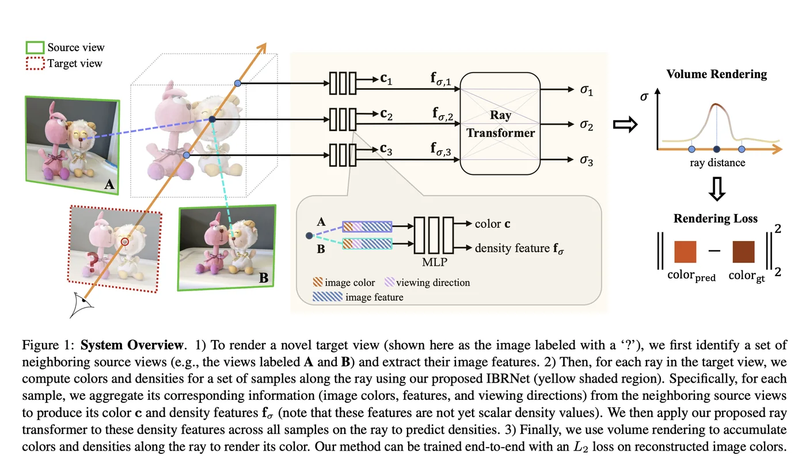
NeRFormer: 不是进行特征/注意力加权，而是把每个源视图的投影特征（以及它的相机信息）看作一个序列输入，送入 Transformer 模块；多视图特征融合时，如果不同视角中同一个 3D 点的外观差异很大（由于遮挡、视角变形、光照变化），那么简单地平均或拼接这些特征，会导致错误信息被引入，进而影响预测质量。所以引入视角感知的注意力机制（不仅输入图像特征本身，还输入该特征来自哪个 view，以及该视图和当前点的几何关系，让 Transformer 自主判断哪些视图更可信） 。
做法：输入 token = 图像特征 + 视图编码；所有的视图 token 输入 Transformer，借助自注意力，放大重要视角，抑制交叉与遮挡；最终输出融合（非简单加权）特征。
常见视图编码包含：（1）视图方向（从相机中心指向点 \(\mathbf{x}\) 的方向向量）; （2）viewing angle：ray 方向与 surface 法线的夹角；（3）相机位置编码；（4）深度：3d 点在该相机下的深度值，表示可信程度。
作用：增强对可靠视图的响应、抑制遮挡或误差视图的影响，提高特征融合的几何一致性和上下文表达能力。
优势：利用 Transformer 的自注意力让模型对不同视图的相信程度不同。避免盲目融合遮挡、误差的错误特征。
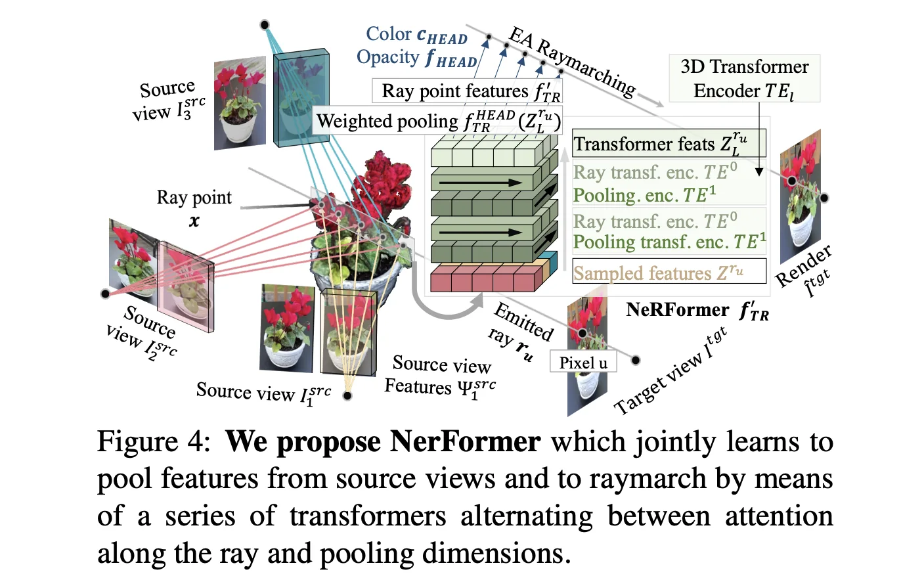
SRF：将多视图的图像特征排列为**一个二维结构（Stereo Feature Matrix），并通过二维卷积网络**建模不同视角之间的上下文依赖和遮挡关系，从而获得更几何一致、上下文感知的聚合特征，用于颜色和密度的预测。
MLP 与 Transformer 融合特征的方法都处理的是：点的特征序列。缺乏局部空间结构，相邻视角之间的空间对应关系难发掘。
SRF 提出将 3D 点在各视图中的特征组织成类似图像格式，让一个轻量的 2D CNN 来处理。
Stereo Feature Matrix 构建：\(\mathbf{F} = \{\mathbf{f}_1, \mathbf{f}_2, …, \mathbf{f}_M\} \in \mathbb{R}^{M \times C}\) -> \(\mathbf{F}_{\text{matrix}} \in \mathbb{R}^{\sqrt{M} \times \sqrt{M} \times C}\)
(M是相机视图数目，完全平方数。默认相机排列已知，然后这个 \(\mathbf{F}_{\text{matrix}}\) 也就用这个排列，才能用CNN获得相邻视图关系)
GNT：Transformer 不 attend 所有特征，而是只融合 Epipolar constraint 区域的特征。
GNT-Move：加入 MoE ，每一个视图 expert 处理某种类型/场景，使用gating network（门控网络） 选择激活不同 expert ，更适用跨场景。
MoE(Mixture of Experts)：在一个大模型中设计多个“专家子模块”，每次只选择其中一部分参与前向计算，从而实现高效率（特定专家完成特定任务）、高泛化（不同专家协同合作）。
流程：
- 通过 Gating Network 得到每个专家的权重分数（通常是 softmax 或 top-k）：\(g(x) \in \mathbb{R}^E\)
- 选择前 k 个专家，比如 Top-2：\(\text{Experts}{\text{select}} = \{E_{i_1}, E_{i_2}\}\)
- 将输入 x 送入这些专家网络，得到输出 \(y_{i_1}, y_{i_2}\)
- 加权求和作为最终输出：\(y = g_{i_1} \cdot y_{i_1} + g_{i_2} \cdot y_{i_2}\)
其余专家不参与计算，节省了大量计算开销！
MatchNeRF：考虑相邻视图中点的投影特征是否一致。引入特征相似性考量$\mathbf{c}{\text{corr}}(\mathbf{x}i) = [\text{sim}{1,2}, …, \text{sim}_{i,j}]$。将相似性特征与融合特征一起送到网络进行预测。相似度高 → 几何可靠（增大权重，保留特征）；相似度低 → 有遮挡或错配风险（降低权重，减小密度，避免发散）。
ContraNeRF：在特征感知提取后（**引入几何一致性度量**，只保留那些与当前 3D 点几何上更匹配的特征），加入对比学习：对于同一个 3D 点在不同视图中采样到的特征，应该相似（正对）；不同 3D 点采样到的特征，应该区分开来（负对）。过滤掉几何不一致的视图特征，拉近了同一个 3d 点在不同视图中的表征，提升几何一致性。
1.3 3D Feature-based
3D Volume Features
Cost Volume
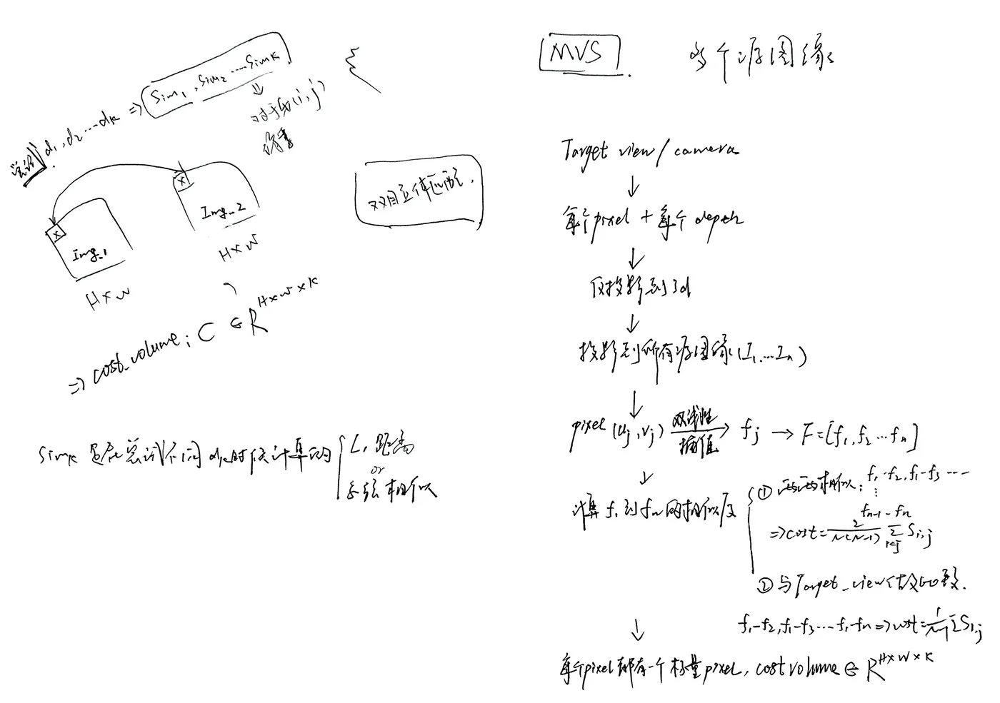
Patch 相似（\(CostVolume[i,j,k]\)值的大小）如何理解：
- 一个 3D 点 \(\mathbf{X}\)，在不同视角中被投影为 \(\{\mathbf{p}_1, \mathbf{p}_2, …, \mathbf{p}_n\}\)；
- 从每个源图的特征图中提取该点的特征 \(\{\mathbf{f}_1, \mathbf{f}_2, …, \mathbf{f}_n\}\)；
- 如果这些 \(\mathbf{f}_i\) 相似，说明这些视角都在看这个 3D 点 ⇒ 所以该深度可信；
- 如果这些特征差异大 ⇒ 各视角投影位置不一致 ⇒ 表示该点不是真实点 ⇒ 该深度错误。
MVSNeRF：图像编码，构造假设深度采样平面（在每个像素上假设多个不同深度，e.g. 64 or 128），每个点都对每个深度d进行逆投影 \(\mathbf{X}_{d}^{(i,j)} = \text{BackProject}(K, T, i, j, d)\) ，得到的每个3d点都投影到源视图 \((u_k, v_k) = \text{Project}(\mathbf{X}_{d}^{(i,j)}, K_k, T_k)\)， 并在每个源视图上都采样该位置的特征 \(f_k^{(i,j,d)}\)。
\(\text{Cost}^{(i,j,d)} = \frac{1}{N} \sum_{k=1}^{N} \| f_k^{(i,j,d)} - f_\text{ref}^{(i,j)} \|^2\)，维度 $H’ \times W’ \times D $。
每一个voxel中存储的是特征向量的差异->标量。
（或者 ：\(\text{Cost}^{(i,j,d)} = \frac{1}{N} \sum_{k=1}^{N} (f_k^{(i,j,d)} - f_\text{ref}^{(i,j)})\)，维度 \(H’ \times W’ \times D \times C\)，这样voxel中存储的就是特征向量了。）
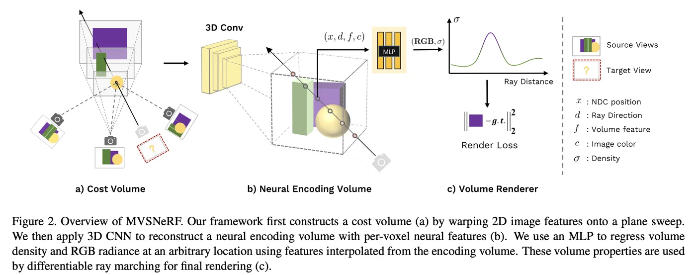
三线性插值是双线性插值的扩展，从立方体八个顶点取出八个特征值，用插值系数按位置线性加权，就可以得到3D网格中任意3D位置的特征的值。Q1: 每个点对应一个体素，具有空间上下文。这里的“上下文”指什么？
在 cost volume 中，每个体素 \(V[d, h, w]\) 是一个位置（假设深度 d）上的三维特征向量。
使用 3D CNN，上下文指3D 点在三维空间中相邻点的信息，比如附近是否也有物体表面、结构是否连续。
Q2: 为什么 3D Volume 的多视图一致性在 volume 构建时已经融合？
与 2D 特征多张图采样特征后进行融合不同， 3D volume在构建时已经融合了多视图特征。
几何一致性 = 多视图下，同一个3D点，在图像上能投影到“相同语义区域”且特征相似。
cost volume 中的每一个体素（即一个像素在一个深度假设下）是通过多个视图特征融合得到的，而且这种融合是带几何一致性假设的！有多种融合方式（如下），最终得到一个特征向量 \(f_{(x,y,d)}\)，放入 volume 的对应体素格子中。
- 简单平均（mean pooling）
- variance pooling（例如 MVSNet）：计算特征之间的方差作为不一致度
- concatenation + MLP：将所有视图特征拼接起来送入一个网络处理
- 注意力融合（GeoNeRF）：引入 visibility-aware 权重，引导更可信视图
Q3:不同深度的信息对建模与重建的作用是什么？
**volume 的第三维本质就是“深度假设维度”，**在每个空间位置尝试一系列的深度值，哪个深度的patch相似性最高，那该3d点就最可能在哪个深度。可以帮助估计表面、合理渲染、提升边界/细节 建模能力。
2D 与 3D 的缺点比较：
缺点 描述 显存消耗大 Volume 通常是 \(D \times H \times W \times C\)，比 2D 大得多 分辨率受限 不可能全分辨率 volume，常用下采样，丢失细节 渲染效率慢 查询 volume 特征 → MLP → 渲染，略慢于轻量方法 构建开销大 cost volume 的构建与 3D CNN 聚合开销较大
GeoNeRF：基于 MVSNeRF，引入 级联的 cost volume + 注意力融合。
**级联 cost volume：**先使用粗粒度 depth 假设初步计算 cost volume 得到初步几何分布。然后根据初步结果，在每个像素处，自适应缩小 depth 范围，构建精细 cost volume。通常是三级（coarse - medium - fine）。
优势：细节区域高效拟合；节省粗大区域的计算开销；
MVSNeRF 直接将 cost volume 进行 均值/方差 融合，无法判断哪些视图可信，容易被遮挡影响。
**注意力引导的 volume aggregation：**用一个注意力模块学习每个视图对某一个体素的贡献权重。输入：每个源视图的 cost volume + 当前相机与体素之间的几何关系（可编码的相对角度/距离）；输出：一组用于加权体素特征的权重。
比 MVSNeRF 略慢，但更精细。
NeuRay：**专注解决遮挡**，预测 3D 点的多视图可见性。学习一个可见性预测网络，对每个体素（3D point + depth）和视图，输入：该 voxel 在源图像的采样特征、3d坐标、相机位姿；输出：可见性评分$ v_j \in [0,1]\(，表示在该视图是否可以看到这个点。最后用预测的评分引导视图融合：\)\mathbf{f}_{\text{fused}} = \sum_j v_j \cdot \mathbf{f}_j \quad \text{其中} \quad \sum_j v_j = 1$。
为保证可见性预测正确，需要监督：利用GT depth map 计算 3D点在每个视角是否可见；用 Binary Cross Entropy Loss 对 \(v_j\) 做监督学习；
ENeRF：不盲目均匀采样大量体积点，而是先估算粗略几何结构，在预测粗深度（真实表面）的附近采样少数点进行渲染就可以。**提升渲染效率。**
流程：以参考视图为基础，构建多层级 cost volume。对每个像素，沿深度维度找到 最小cost **（最大一致性）**位置，作为该点的粗深度。在粗深度附近密集采样（8～16个点），其他区域稀疏or跳过采样。后续进行 这些点的 特征提取、融合、MLP预测以及渲染。
与GeoNeRF区别：
GeoNeRF 对所有源图像均视为参考视图，均进行级联 cost volume 计算，对于各个源视图得到的 cost volume 又通过 attention 进行聚合得到全局 volume 。然后才喂到 MLP进行预测，重在解决精细重建问题。
ENeRF 只选择一张源图作为参考进行级联 cost volume，对得到的 cost volume 沿着深度维度为每一个像素寻找 cost最小（深度最接近的GT）的深度作为该像素的真实粗糙深度。然后在这个粗糙深度附近密集采样，然后反投影与特征采样、融合，最终MLP预测与体积渲染。
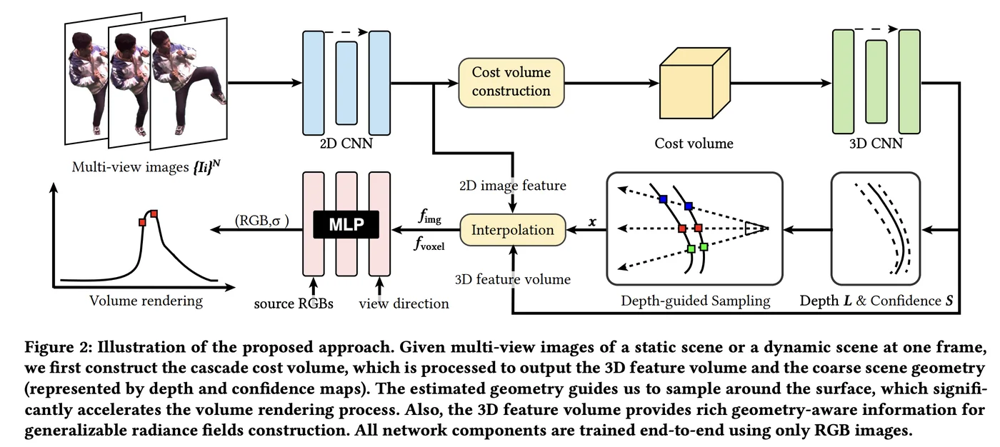
MuRF：传统 MVSNeRF / GeoNeRF / ENeRF 都以 某一张参考图像为基准，构建 cost volume，当参考视图与其他视角重叠度低，会导致效果很差。所以提出：不以参考图驱动，而是以 目标视图（目标渲染视角）为中心 构建视锥体 volume。
以 目标相机为视角中心，按照深度采样构建 视锥体volume，将这些3d点逆投影到源图像，采样特征并聚合得到 cost volume。从目标视角出发，在该volume中按射线采样若干点，并用三线性插值得到其特征，送到 MLP 预测该点的 color 与 density，最后进行体积渲染。
优势：结构天然对齐目标相机几何，适合参考图像与目标视图重叠很小的稀疏场景。
缺点：几何一致性引导很弱，直接靠猜；遮挡鲁棒性差；对于每一帧都要重新构建。
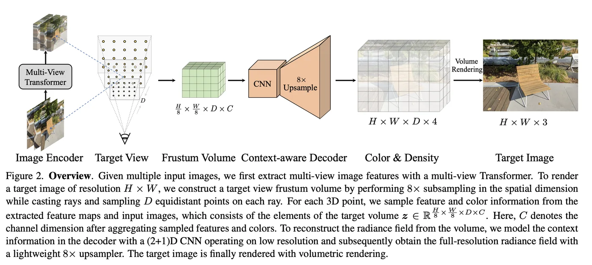
GeFu：把 MVSNeRF 得到的各视图采样特征 $\{f^s\}_{s=1}^N$ 送到小的 attention 网络，来学习一个 softmax 权重向量 \(\{w^s\}_{s=1}^N\) 表示该 voxel 更信任哪些视图，最后得到加权特征 \(f^{\text{fused}} = \sum_{s=1}^{N} w^s \cdot f^s\) 或者加权相似度 \(\text{cost}(x,y,d) = \sum_{s=1}^{N} w^s \cdot \text{Corr}(f^r, f^s)\)。对采样的 3D 点插值得到体积特征，然后与方向等其他信息拼接送入 MLP 预测并体积渲染。
3D Triplane Features
Triplane：将3d点投影到三个轴对齐的二维平面 \([(x,y),(x,z),(y,z)]\) ，对3d点采样这三个平面上对应的二维特征向量并融合，就可以得到该 3d 点的最终表示。
**优点：**三个二维特征图比一个稠密三维体积高效很多；CNN 与 Transformer 在这样的平面上更高效；
LRM：大规模单图重建模型。给定单张图像以及相机参数，借助 Transformer-based Encoder-Decoder 来预测 3D Triplane 表示，然后通过 MLP 得到颜色+密度，最后体渲染实现NVS。
Steps:
图像编码。利用DINO（自监督ViT），每 16*16 patch 得到一个 image token。
Image-to-Triplane Transformer Decoder。输入 image token + 相机特征 + 可学习的 triplane position embeddings；输出 triplane tokens。
（Cross Attention：image token 与 triplane embedding 之间信息交互；
Self Attention + MLP + Residual + Camera Modulation：构成标准 transformer block）
构建 Triplane。Deconv + reshape。
MLP 预测 + 体渲染。 从目标视角发出射线，3d空间均匀采样多个点，每个点分别投影到三个平面上，并利用双线性插值得到 triplane tokens ，聚合特征，用一个 MLP 进行预测。最后使用 NeRF 体渲染沿着射线积分，得到每条射线颜色，重建图像实现 NVS。
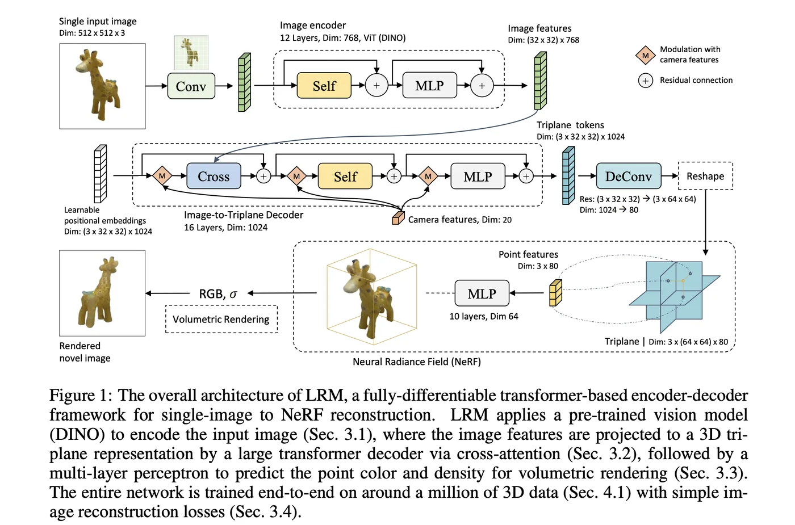
**优势：**单图重建 / 可扩展transformer / 大规模学习。
Posefree-LRM：训练是有监督的相机姿态学习，推理时无需输入 camera pose 。不依赖外部输入的姿态，但训练阶段仍然可以用已知姿态来生成监督信号（作为“老师”），而不是让网络直接学习姿态参数。
训练
- 输入：已知 pose 的稀疏图像（pose 不作为网络输入，仅用于监督）
- 设定参考视角，利用 DINO 提取图像 patch tokens（不依赖 pose）
- 从 patch tokens 预测 3D 点云和不透明度，用 GT pose 生成 3D-2D 对应关系，监督预测的 3D 点和不透明度 （\(\mathcal{L}_p = \sum_{i,j} \| p_{i,j} - \hat{p}_{i,j} \|^2, \quad \mathcal{L}_\alpha = \sum_{i,j} (\alpha_{i,j} - (1 - T_{i,j}))^2, \tag{6}\)）
- 可微 PnP 损失（\(\mathcal{L}_y = \sum_i s(y_i, P_{i,j}, \beta_{i,j}) + \log \int \exp\left(-\sum_i s(y_i, P_{i,j}, \beta_{i,j})\right) dy_i\)）作为正则化，使网络学会从 patch tokens 恢复合理几何结构，并估算合理 pose。
- 通过 Transformer 得到的 Triplane tokens 进行 reshape + upsample 得到 三平面特征，然后选择新视角，使用该视角的 GT pose 对 NeRF 选择的 3d 点进行投影，然后 MLP预测 + 体渲染得到新图像，再与 GT 比较训练 Triplane 的表达能力。
测试
输入： unposed sparse input imags；
patch 提取 -> DINO -> tokens -> 预测粗点云，使用可微 PnP 估计每张源图像相对于参考视角的pose；
构建 Triplane 特征，3d 点借助预测 pose 进行投影与特征聚合，MLP 预测 + 体渲染实现 NVS。
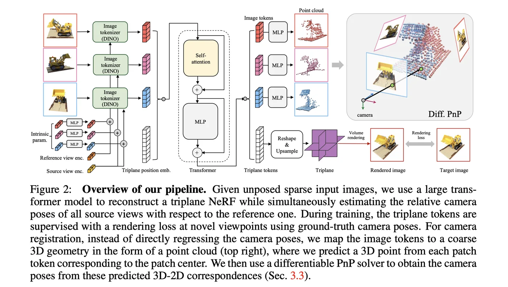
LRM-zero：摆脱真实数据，能够仅基于合成数据进行训练。（Zeroverse 是一个生成的大规模合成数据集，其数据是使用程序生成或渲染手段合成出来的）
Instant3D：Text-to-4view + image-to-3D。
Stage 1: Text-to-4view
Text prompt 送到微调的 Stable Diffusion or SDXL ，生成 4 个视角图像并赋予pose。
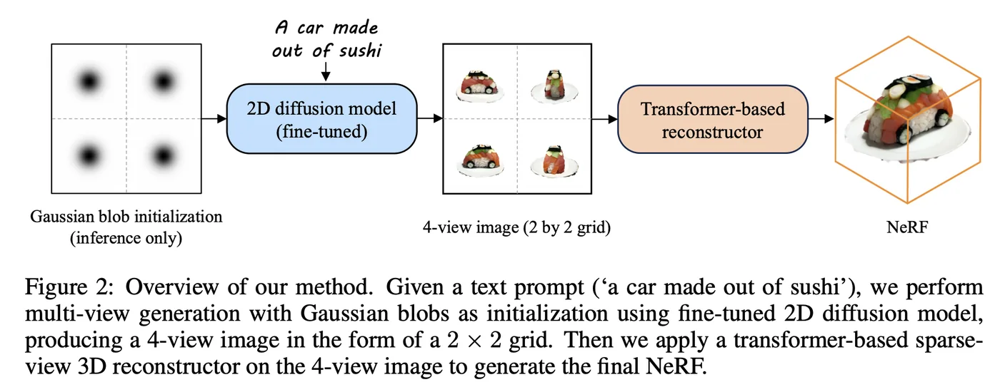
Stage 2: image to 3D
images + pose -> ViT -> image tokens + Triplane embeddings -> Triplane tokens -> Triplane-> MLP -> Volume Rendering
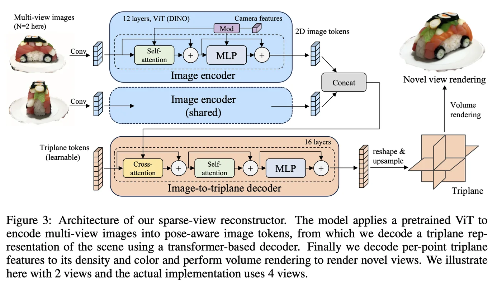
DMV3D：受 Render Diffusion 影响，将LRM融到多视图扩散中，在扩散过程中从有噪声的多视图图像中逐步重建出干净的三平面NeRF表示。
RenderDiffusion 的思想：将 图像扩散模型 与 神经渲染（NeRF） 相结合
将 NeRF 视为一种 可学习的渲染函数，嵌入到扩散过程当中；每一步 denoising 扩散模型不仅“去噪”图像，还“反演”渲染过程，从而学习出 3D 表示。
DMV3D pipeline：
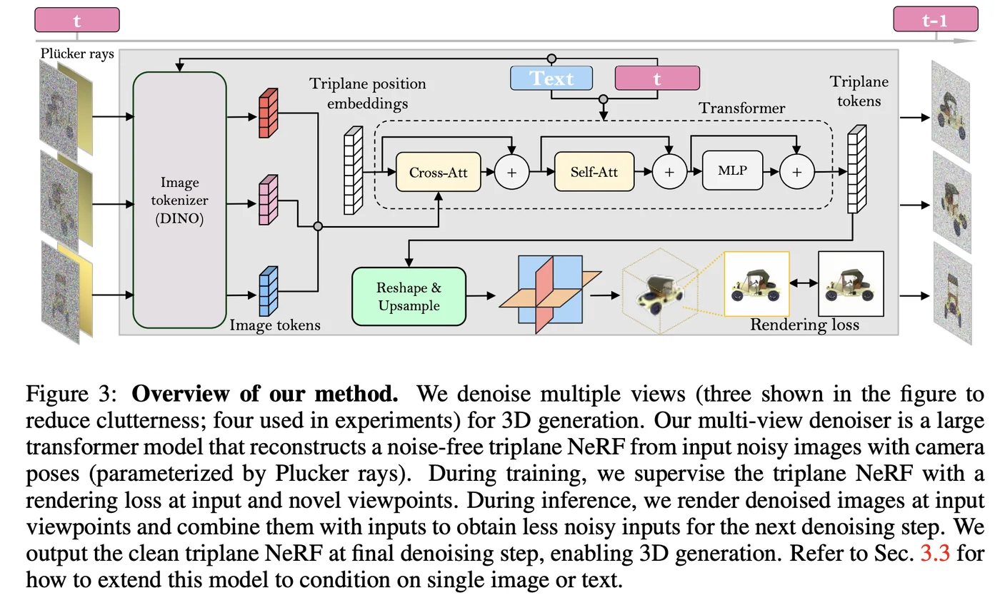
意义：合成领域（diffusion）实现重建的框架，适用 open-world 重建（少量真实图像 + 生成图像）；支持文本or图像输入；为 Zero-shot、Weakly-supervised 3D reconstruction 提供一种方向。
1.4 others
VisionNeRF:1D +2D 特征加权融合进行预测与渲染。
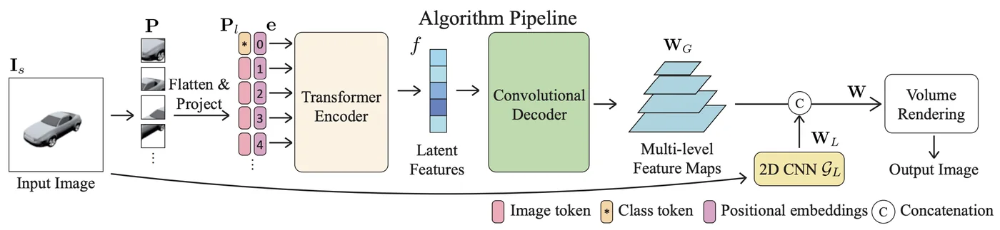
2.Pointmap
DUSt3R： pointmap-based 先驱。2 images；输出对齐点图，用于恢复各种三维信息。共享 ViT encoder -> 两个独立的 decoder（cross attention 进行信息交互）-> 2 heads -> pointmap + confidence；
尺度歧义性（scale ambiguity）：几何推理中，\(x = K[R|t]X\) ，在这其中如果 \(t\) 和 \(X\) 都同比例缩放，那对于 \(x\) 的二维平面位置是不造成改变的。这就会导致所谓的推理只能恢复比例关系，但是没法恢复真实尺度。所以在 DUSt3R中输出的点图理论上是落在相机1坐标系下的3d点，但是它并不知道实际中的点图的一个单位相当于世界的真实长度。所以就同时用预测点图之间的距离对预测图归一化，对GT点图用GT距离进行归一化，这样大家都处在一个只看相对尺度的状态下，这就消除了尺度歧义。
Q：那为什么不是用预测点图去follow GT点图？把预测图直接拉到世界坐标系下不是更好吗？既能有pose等信息还能有深度的绝对尺度信息？
A：首先根据透视投影的尺度不变性， \(x = K[R|t]X = K[R|st]{sX}\) ，单纯从一张图片中是无法得到绝对尺度信息的，你得到的也只是相对于这个图片的所谓“真实尺度”，**同一张图片在不同尺度下都能投影正确，它没法区分。**而直接拉到世界坐标系下也会出现很多问题：数据依赖太强（世界系依赖数据集的pose标定，不同数据集世界系不一致）；既学习几何又学习对齐的话网络任务太复杂，DUSt3R恰就是绕开这其中SfM的步骤，直接前馈预测，将SfM作为它的下游任务；要预测绝对尺度，那实际情况下这个坐标距离远，跨度就大，模型收敛会变困难。
A：虽然对于这种image pair的模式来讲，相当于是双目立体匹配，但其实它是不确定有已知的基线并进行过平行矫正的。同时预测相对尺度的信息，这反而更是通用，对于特定的项目只需要再通过 depth 或者我 LiDAR来转换到绝对尺度就可以，而不是绑定到一个特定的双目上rig。
Confidence map: \(\mathcal{L}_{conf} = \sum C_i \cdot \ell_{regr}(i) \;-\; \alpha \log C_i\)，这其中 \(C_i = 1 + \exp(\hat{C}_i) > 1\) ，能够迫使 \(C_i\) 在网络训练中不会因为减小 loss 而偷懒把 \(C_i\) 给训练到趋于0（网络完全 跳过困难区域，不去学习），就算网络认为某个像素难预测，loss 权重至少也得有 1 倍回归误差，这就迫使网络必须要估计一个尽可能合理的值来降低loss（强迫进行合理外推）。
正交 Procrustes 问题 (Orthogonal Procrustes Problem) = 给定两组点，求最优的 正交矩阵 R（旋转/反射），使得它们尽量对齐。 \[ R^* = \arg \min_{R \in SO(3)} \| Y - RX \|_F^2 \]
- \(X, Y\)：两个点集（按列或行排列成矩阵）；\(\| \cdot \|_F\)：Frobenius 范数（矩阵的平方和）
- 约束：\(R^T R = I, \det(R) = 1\)（正交矩阵）
- 如果允许加上平移 \(t\)，问题就变成：\(R^*, t^* = \arg \min_{R,t} \sum_i \| RX_i + t - Y_i \|^2\)
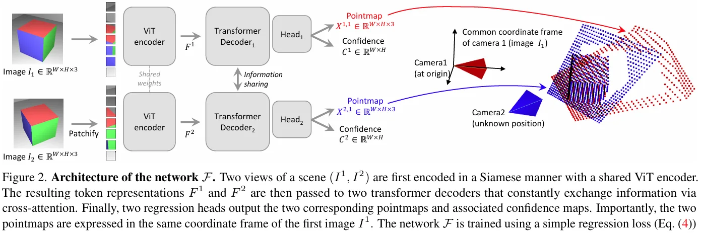
**MASt3R：**在 DUSt3R的MLP heads 基础上添加了 local features 预测头，并添加 matching loss 来训练，最后引入一种快速相互匹配方案，能将匹配速度提高几个数量级。
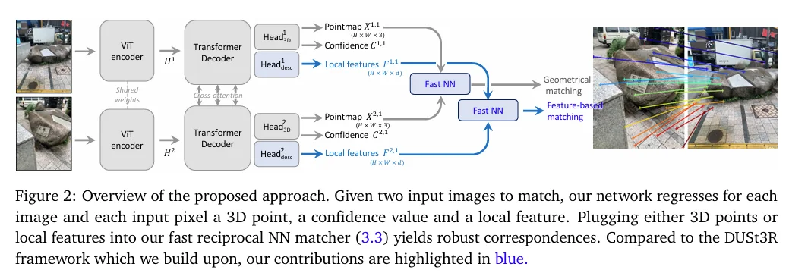
Fast3R：改变了之前 2 images 的固式思路，可以并行处理多个视图。将 N 张 RGB 图像映射到 N 个局部和全局 pointmap.
1000+ unordered, unposed images -> 1 forward pass -> 3D reconstruction;
image pair 的思路处理多视图就需要 \(O(N^2)\) ，但是 1 forward pass 就大大降低了这个计算开销，而且这样的“多视图”其实本质上还是 image pair ，限制了多视图之间的信息传递。
Fast3r 采取 all in 的策略，用一个 fusion transformer(24), takes the concatenated encoded image patches from all views and performs all-to-all self-attention, pointmap decoding 将所有的tokens映射到各自的 local 和 global pointmaps 上。
数据的多样性和准确性限制，合成数据可以考虑；视图数量极大（300+）时置信度低的 pointmap 会出现漂移，在密集重建中，其实可以直接丢掉这些置信度低的帧，能够避免坏结果而且少量丢弃对实际的密集重建影响不大。
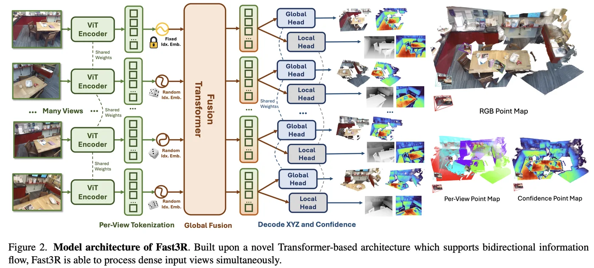
MV-DUSt3R：同样囿于 DUSt3R 的 2 images 设定（多视图重建，每两两优化时看起来合理，但是全局往往引发冲突，通过全局优化难以解决，只能旋转预测结果但不能纠错，导致点图错位）。可以认为 2 views 时的 MV-DUSt3R就是 DUSt3R 。
选定一张图片作为参考视图，decoder 对于源视图和参考视图分别解码，结构相同但权重不同，\(DecBlock^{ref}_d\) 专门用于更新参考视图的 tokens ，\(DecBlock^{src}_d\) 更新来自其他所有源视图的 tokens 。
MV-DUSt3R 的参数数量与 DUSt3R 几乎相同，所以可以使用预训练的 DUSt3R 权重来初始化 MV-DUSt3R，从而获得高效的初始化。
不同的参考视图选择，MV-DUSt3R 重建场景的质量在空间上有所不同。源视图与参考视图视角变化小的时候预测点图效果好，但是差异大了之后，点图预测效果就不行了。考虑到 稀疏重建 是很难有参考视图和其他源视图有较小的视角变化的。
所以提出 MV-DUSt3R+ ，选择多个视图作为参考视图，并且认为对于某些输入视图，虽然在一个参考视图下点图预测可能较为困难，但在另一个参考视图下则可能更容易（例如，视角变化较小，匹配模式更显著）。
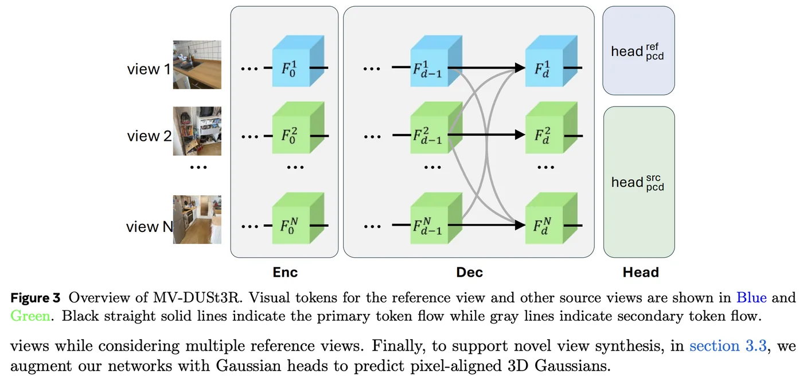
同时，MV-DUSt3R 还引入了 Cross Reference-View Block ，由于多个参考视图，所以对于每一个固定的 view1 ，可以与 M 个参考视图做比较；对于每一个参考视图，都可以和剩余的所有源视图做比较。
任意视角（reference or source）的token都与设置的所有的 reference 视角，以及其余的 source 视角做了 cross-attention ，全局信息得到了补充，一定程度上也解决了当 reference 视角与 source 视角差别很大时，推理效果差的问题。
最后还用了 Gaussian Head 来适配 Gaussian Splatting 渲染。
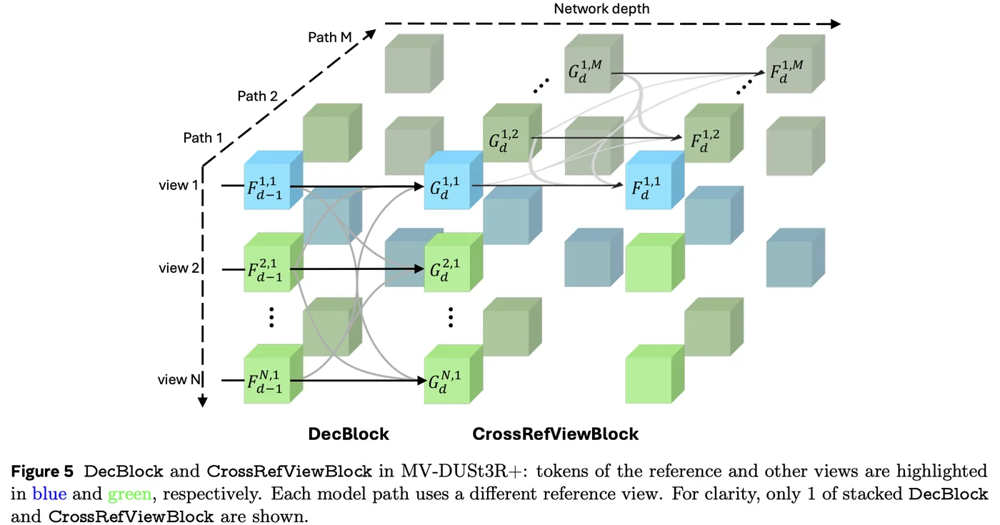
为什么 MV-DUSt3R 的 ref 和 src 的 head 要分开来预测？有什么好处？
其实是一个兼顾性问题，这样既可以由ref来保持跨视角的一致性，还能有src来学习各个视角直接的局部特征联系。二者之间通过交叉注意力来使得ref的信息更流通，更全局，坐标系更准。传统的 Dust3r 乃至 MASt3R都是纯粹的 pair 层面，他没有一个可以来 attention 全局内容的东西。而 MV-dust3r 中的 ref 就是全局的，而 src 则是除参考视图以外的全局，more global。source frame 只需要学习如何在自己的观测下与 ref 对齐。
**SLAM3R：**输入视频，经过滑窗处理得到短视频片段，输入到 I2P 提取局部几何信息，再经过 L2W 增量处理局部信息得到全局三维环境。
**I2P：**在每个窗口内，选择一帧作为关键帧（一般为中间图像，因为最大程度地重叠）来建立参考系，其余帧用于辅助重建，全局的初始坐标使用第一个窗口；类似 MV-DUSt3R ，但是 ref 和 src 之间是有 cross attention 的。
L2W：结构与 I2P 类似。初始化没有配准帧，需要从第一个滑窗中选择最合适的关键帧初始化。维护一个大小为 B 的缓冲集合，首先选择的 B 个帧直接进入集合，当一个新的关键帧被 I2P 推断出来后，先从缓冲区找到 Top-K 相关的场景帧与该关键帧一起输入 L2W ，经过编解码操作最终输出全局pointmap。
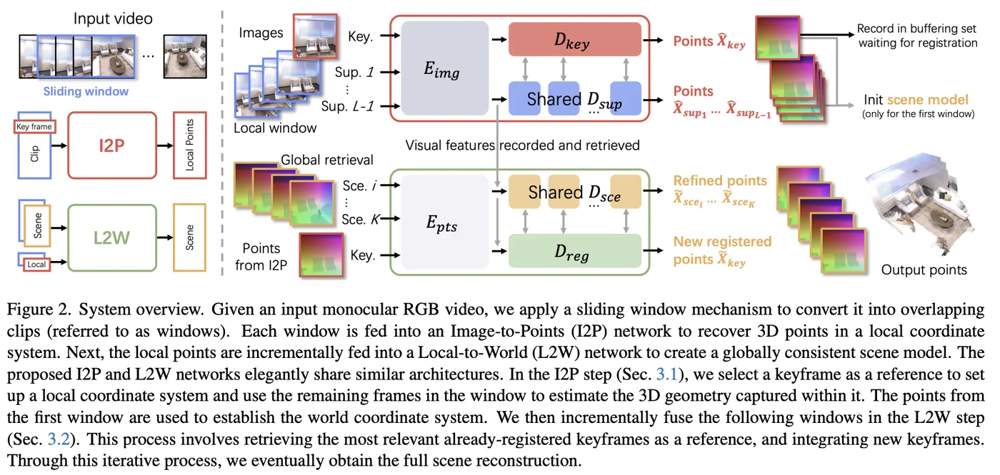
Spann3R：
外部空间记忆？如何跟踪？
How to predict next frame?
人类内存模型?
基于DUSt3R的权重并在一个子数据集进行微调。
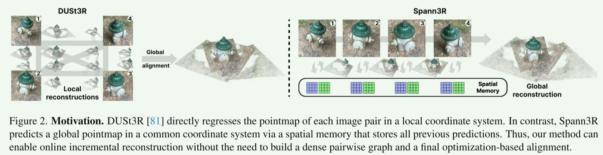
MUSt3R： CUT3R：
Point3R：
Driv3R：
Light3R-SfM：
Register3R：
Pow3R：
Rig3R：
MoGe：
Test3R：
VGGT：
π^3